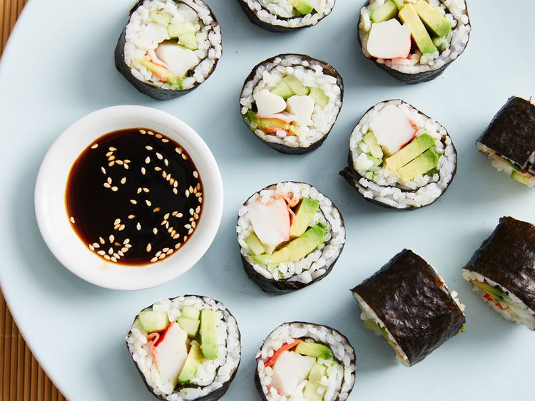
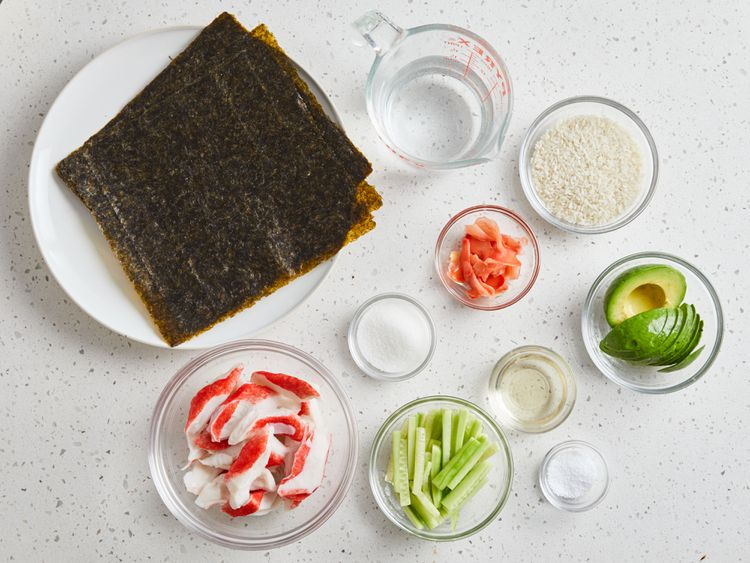
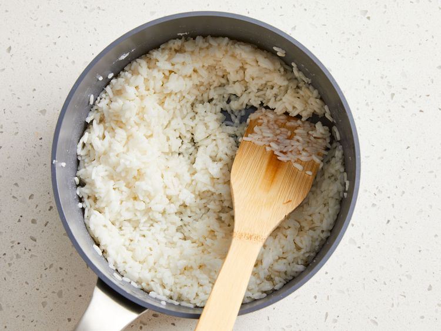
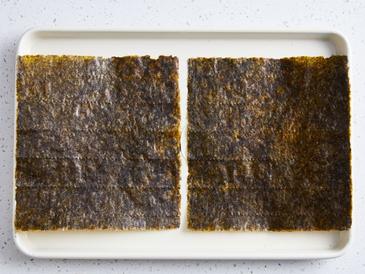
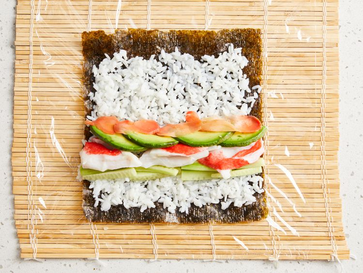
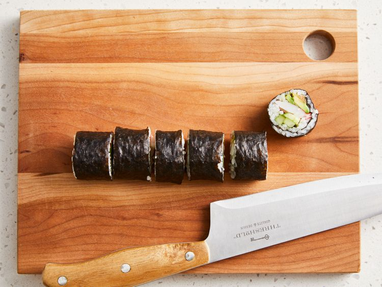

Odin Recipes Page
Sushi Rolls

Sushi Rolls
Sushi is a traditional Japanese dish made with vinegared rice, typically seasoned with sugar and salt, and
combined with a variety of ingredients, such as seafood, vegetables, or meat: raw seafood is the most common,
although some may be cooked.
Ingredients List
- 1 ⅓ cups water
- ⅔ cup uncooked short-grain white rice
- 3 tablespoons rice vinegar
- 3 tablespoons white sugar
- 1 ½ teaspoons salt
- 4 sheets nori seaweed sheets
- ½ pound imitation crabmeat, flaked
- 1 avocado - peeled, pitted, and sliced
- ½ cucumber, peeled, cut into small strips
- 2 tablespoons pickled ginger
Directions
- Gather all ingredients. Preheat the oven to 300 degrees F (150 degrees C)

- Bring water to a boil in a medium pot; stir in rice. Reduce heat to medium-low, cover, and simmer until
rice is tender and water has been absorbed, 20 to 25 minutes.
- Mix rice vinegar, sugar, and salt in a small bowl. Gently stir into cooked rice in the pot and set aside.

- Lay nori sheets on a baking sheet.

- Heat nori in the preheated oven until warm, 1 to 2 minutes.
- Center 1 nori shet on a bamboo sushi mat. Use wet hands to spread a thin layer of rice on top. Arrange 1/4
of the crabmeat, avocado, cucumber, and pickled ginger over rice in a line down the center.

- Lift one end of the mat and roll it tightly over filling to make complete roll. Repeat with remaining ingredients.
- Use a wet, sharp knife to cut each roll into 4 to 6 slices.

- Enjoy and Itadakimasu!